Steve Perez of Abilene, Texas, and Richard Seigle of California have asked me to display their film set pictures from James Cameron’s Titanic.
This “11 Oscar” film stars Kate Winslet as 1st class passenger Rose, who is reluctantly engaged to be married to the extremely wealthy Cal, played by Billy Zane. However, as they travel back to America aboard Titanic, she meets 3rd class passenger, free-spirit and penniless artist Jack (Leonardo DiCaprio), and begins to fall in love with him. The story is told by the 100-year-old Rose, who is brought in to help a modern-day treasure hunter find a fabulous diamond, “The Heart of the Ocean”, last worn by Rose on the night of the sinking. Will love conquer all ? Well you’ll have to see the film to find out!
Titanic was released on December 19th 1997 in the U.S.A., and on January 23rd 1998 in the U.K. Having been to see it twice now, I would say it is well worth seeing if you are interested in the Titanic. The recreations of the ship are tremendously detailed. See the Internet Movie Database for more details including a full cast list.
Before leaving this site, have a look at the pictures on my Titanic Memorials Page and the Richard Seigle film set pictures below, and send me your comments. Let me know which pages in particular you have visited. Please note: I am not James Cameron, did not appear in the film, and had no part in the production of it.
© Steve Perez of Abilene, Texas
The set included a Titanic model 775 feet long (the real one was 882′ 9″), of the starboard side of the ship. It was constructed in a giant waterfront tank in Baja California, Mexico, near Rosarito Beach.
© Jack Cardoza and Richard Seigle of California
Sample from a set of 27 film set pictures, taken by an extra on the movie. The pictures came with notes describing each photograph, plus interesting background material on the film. The quality is great (I have had to compress and reduce the quality of the scans because of bandwidth considerations) and I would recommend them to fellow Titanophiles. Please note that these pictures were not sold by me, and I made no money from them.
© Steve Perez of Abilene, Texas
Because the set had to face into the prevailing wind so that the smoke would blow the right way in the “at sea” scenes, the film had to be reversed for the Southampton dock scenes in order to get the ship the right way on in relation to the dockside. Consequently, many notices and signs were printed as mirror images so that the film could be “reversed”.
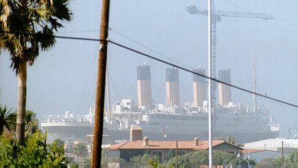
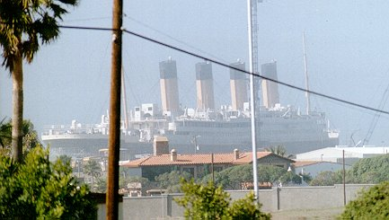
© Steve Perez of Abilene, Texas
For those scenes requiring both halves of the ship, computer-generated graphics were used. The set was mounted on hydraulic rams so that when the sinking was being filmed, the set could be partly submerged at the correct angle in its water tank. Following the completion of filming, the model (basically a thin metal skin over chipboard, supported by scaffolding) was too badly damaged to be safe for public viewing. It was demolished, and individual props were auctioned off, many of them through the J. Peterman Company. Some of the remaining rooms, clothes and models were used in the Titanic Movie Tour exhibition, and could be seen at various places around the world.
© Steve Perez of Abilene, Texas
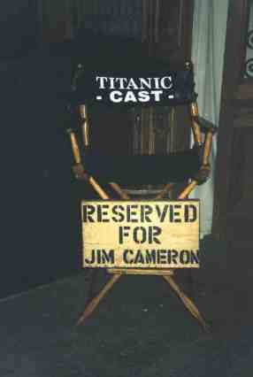
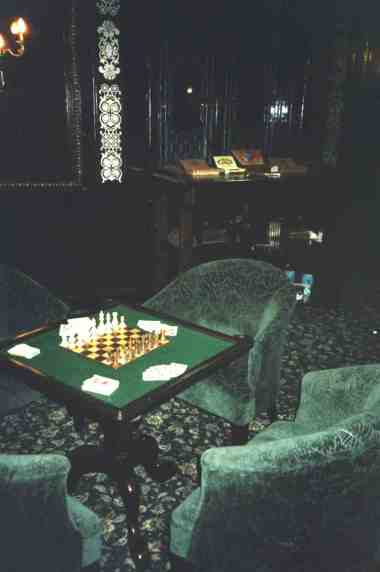
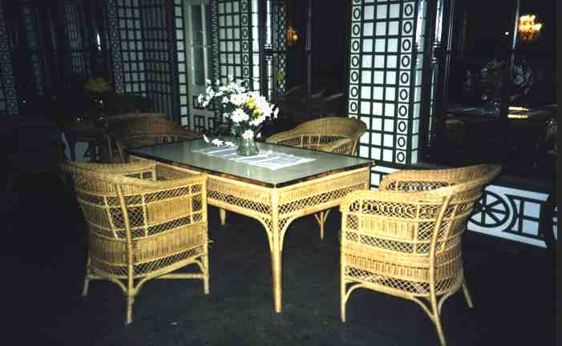
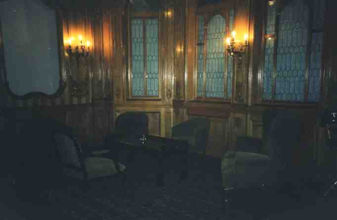
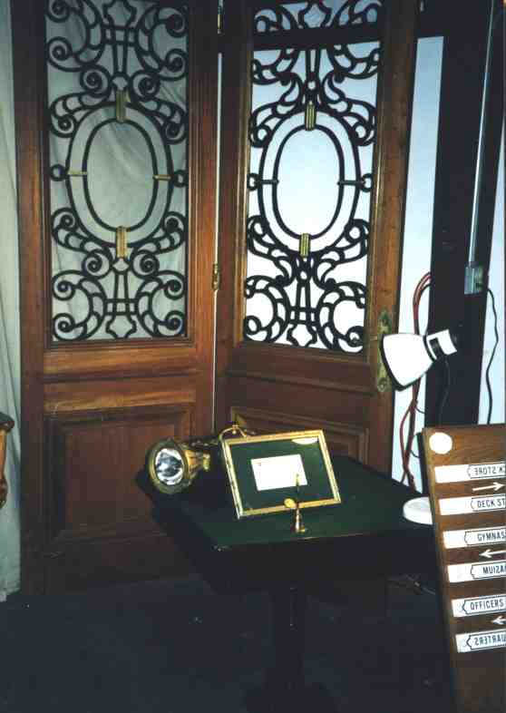
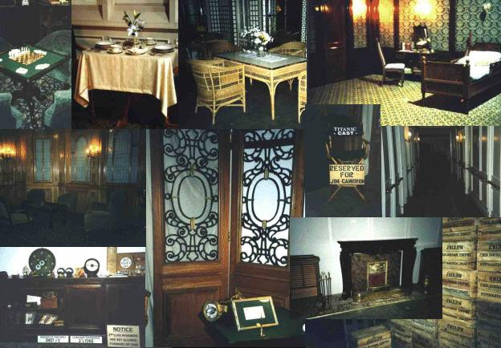
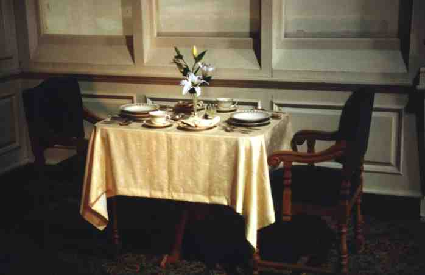
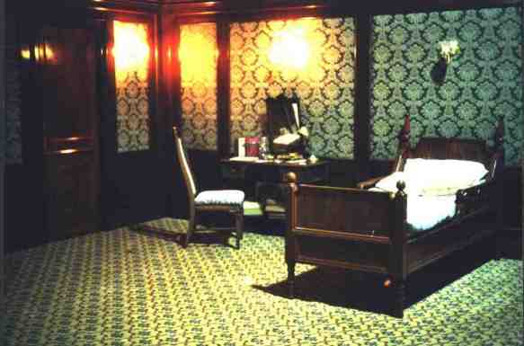
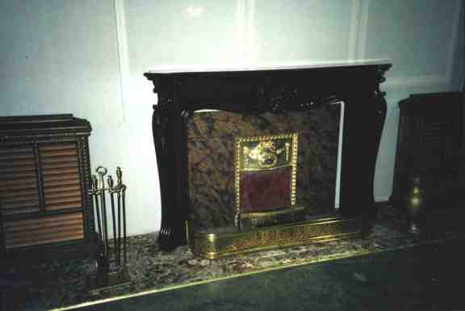
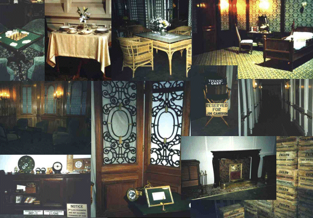
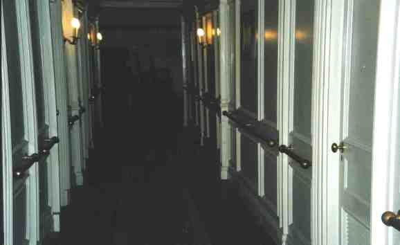
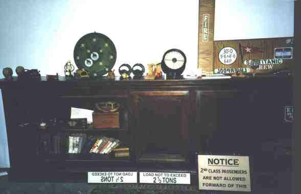
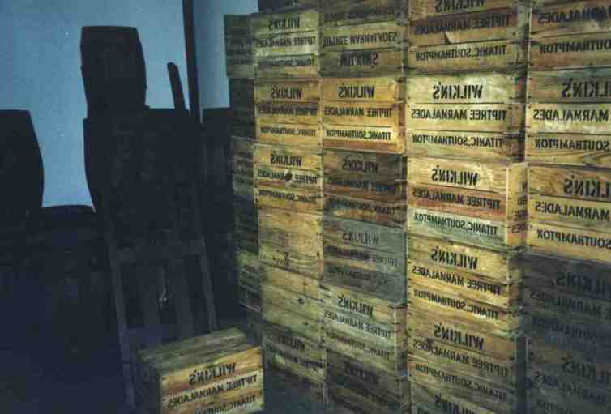
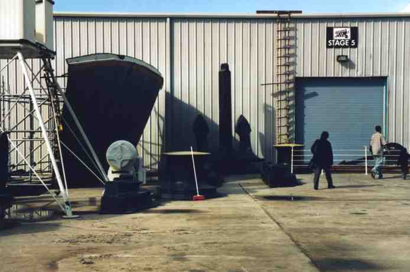
© Richard Seigle of California